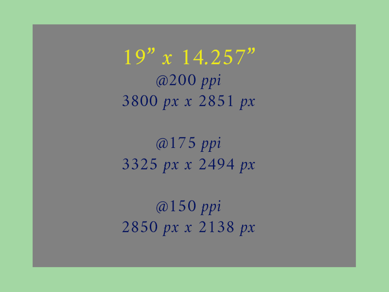

Harvard Library
Global & Inclusive
Africa
9 images
Mount Sinai.1849-1869.
Edward Lear watercolor of Mt Sinai
[Largest image in DRS: 7056 x 3495]

ue du Cap de Bonne esperance de la baie = Gezigt van de Kaap der Goede hope van de reede
A view of Cape Town from 1770
[Largest image in DRS: 10170 x 4020]

Musiciens de Rionga
Richard Buchta photograph of Ugandan musicians
[Largest image in DRS: 3922 x 3023]

Xosa Women Reaping, Tamacha, King William's Town District, Cape of Good Hope, South Africa.
[Largest image in DRS: 5770 x 4457]
![Ansicht eines Madi-dorfes bei Laboré Buchta, Richard, 1845-1894, Austrian [photographer] between 1878 and …](https://ids.lib.harvard.edu/ids/iiif/26107332/full/full/0/default.jpg)
Ansicht eines Madi-dorfes bei Laboré Buchta, Richard, 1845-1894, Austrian [photographer] between 1878 and …
[Largest image in DRS: 3932 x 3028]
![Eland's kopjes, Duur-en-Duur, Dist[rict of] Zoutpansberg Gros, H. F., South African [photographer] 1887?](https://ids.lib.harvard.edu/ids/iiif/17892475/full/full/0/default.jpg)
Eland's kopjes, Duur-en-Duur, Dist[rict of] Zoutpansberg Gros, H. F., South African [photographer] 1887?
[Largest image in DRS: 4417 x 3488]

Drawings of plants collected at Cape Town, 1817-1820. gra00074, Botany Libraries, Gray Herbarium Library, …
[Largest image in DRS: 4605 x 5526]

Powell, Josephine. (1968). Morocco.Warming drum heads
Between 1951 and 1975 photographer Josephine Powell traveled extensively in the Mediterranean and beyond. The FAL collection of black and white photographs, predominantly of folklore performances in Marrakech and southern Morocco taken on one of several trips the photographer made to Morocco between 1968-1975. Warming the drum allows for better resonation
[Largest image in DRS: 5520 x 3714]

Sébah, S. (1875). Obélisque De Cléopatre à Alexandrie
Pascal Sébah (1823–1886) was a photographer in Constantinople (now Istanbul) and Cairo, who produced a prolific number of images of Egypt, Turkey and Greece. He was born there to a Syrian Catholic father and an Armenian mother. While he mostly catered to tourism, he also photographed the aftermath of the Anglo-Egyptian War (1882) where the port city of Alexandria in Egypt was subject to an intense British naval bombardment
[Largest image in DRS: 4735 x 3328]
Asia
20 images
<U+5C0F><U+5DDD><U+677E><U+96F2>. <U+677E><U+96F2><U+6A21><U+6A23><U+8F2F>. <U+4EAC><U+90FD> : <U+5C71><U…
[Largest image in DRS: 3032 x 4524]
![[Album of watercolors of Asian fruits and flowers]. [between 1798 and 1850?]. RARE RBR K-3-2 PHIL. Dumbart…](https://ids.lib.harvard.edu/ids/iiif/426036935/full/full/0/default.jpg)
[Album of watercolors of Asian fruits and flowers]. [between 1798 and 1850?]. RARE RBR K-3-2 PHIL. Dumbart…
Drawings may have originated in the Philippine Islands. “[T]he origins of the watercolors seem likely to be Malaysia or Sumatra, based on the striking similarity with paintings in Kew, the British Library, and the London Natural History Museum.”–http://www.doaks.org/library-archives/library/library-exhibitions/botany-of-empire/illustration-and-representation/album-of-watercolors-of-asian-fruits-and-flowers
[Largest image in DRS: 4902 x 4138]

Damo dong du tu
Rubbing from stele of “Damo dong du tu” – a portrait of Damo (a Buddhist monk active in Southern-Northern Dynasty, 386-581). The portrait drawn by Fengdian (1651-1710, a Buddhist monk active in Qing Dynasty).
[Largest image in DRS: 6596 x 13496]

Atlas of Korea: <U+5927><U+6771><U+8F3F><U+5730><U+5716> | Taedong yojido
See the source as accordian-paged, 22 volume atlas: http://nrs.harvard.edu/urn-3:FHCL:3716645 [Creator: Kim, Chong-ho, active 1834-1864.] This virtual assembly of the map panes provides an example of how access to a physical resource can be transformed through digitization.
[Largest image in DRS: 22323 x 30929]

Baidi cheng feng huang tu
Rubbing from stele of “Baidi cheng feng huang tu” – a picture drawn by Bao Chao (a general active in Qing Dynasty, 1644-1911).
[Largest image in DRS: 10155 x 17920]

Sixteen Arhats at Shengyin Temple– the 7th: Kalika Arhat
These 16 Arhats, personal disciples distinguished by the Buddha, formed part of the 500 claimed by tradition to have attended the First Council in Rajagrha. The names and abodes of these 16 arhats are given in a work entitled “Record on the Duration of the Law, spoken by the Great arhat Nadimitra,” which was translated into Chinese by the famous pilgrim Xuanzang (596-664) in 654.
[Largest image in DRS: 4743 x 10606]
![Album of 70 Asian fruit paintings. [between 1800 and 1899?]](https://ids.lib.harvard.edu/ids/iiif/426037355/full/full/0/default.jpg)
Album of 70 Asian fruit paintings. [between 1800 and 1899?]
Javanese Tiger
[Largest image in DRS: 5018 x 3924]

<U+5317><U+5C3E><U+91CD><U+653F>. <U+82B1><U+9CE5><U+5BEB><U+771F><U+5716><U+5F59>. <U+6C5F><U+6236> : <U+…
Birds and flowers: Japanese Originals collected by E.G. Stillman
[Largest image in DRS: 3454 x 2565]

A treatise on fortune telling : manuscript, before 1844
Fortune telling manual based on a 12 animal zodiac. Four-page spreads include paintings of the animal for a specific year, along with mascot-figure for that year, the corresponding tree for that year, and scenes depicting good and bad marriage matches for that animal zodiac. The monkey, rooster, dog, and pig are fully illustrated but do not have any accompanying text.
[Largest image in DRS: 3172 x 4566]

Buyo Kanazawa hakkei ryakuzu
Hiroshige pictorial map of Kenegawa Japan
[Largest image in DRS: 5462 x 4075]

Tu<U+1E25>fat al-<U+02BB>Iraqayn : manuscript, 1604
Persian book of poetry
[Largest image in DRS: 3456 x 5105]

Young Lama from Yong he gong, Lama Temple, Beijing.
from Hedda Morrison collection
[Largest image in DRS: 3326 x 4845]

Firdawsi. Shahnamah : manuscript, 1718-1721. MS Persian 78. <U+0641><U+0631><U+062F><U+0648><U+0633><U+064…
Persian mythology poem
[Largest image in DRS: 2939 x 4381]

Woman holding tea set ca. 1890
Ernest Goodrich Stillman generous benefactor of Harvard University, he had many interests, including photography and collecting Japanese art and literature.
[Largest image in DRS: 3572 x 4410]

Pinus densiflora, P. koraiensis Korea: Man standing on rock with vegetation and rocky peaks behind
EH Wilson expeditions to East Asia
[Largest image in DRS: 3708 x 4878]

<U+738B><U+9EFC>. <U+91CD><U+4FEE><U+5BA3><U+548C><U+535A><U+53E4><U+5716><U+9304> :<U+4E09><U+5341><U+537…
fore edge artwork
[Largest image in DRS: 5394 x 2774]

Bonfils Family, B. (1865). Cameliers Resting in the Desert.
Middle East and the Islamic World: Photographs documenting the Middle East in the Fine Arts Library are particularly notable for their variety and depth. Most prominent is the Harvard Semitic Museum Photographic Archives, developed at the Semitic Museum between 1891 and 1992, and transferred to the FAL in 1995, comprising over 38,000 images in a wide variety of formats. Other Middle East collections include exceptional photographs by prominent 19th c. photography studios such as Maison Bonfils and Antonio Beato. Félix Bonfils and his wife Lydie (1837-1918) came from Saint Hippolyte du Fort in the Gard. As a binder, then a printer, and finally a photographer trained by Niépce de Saint Victor, Félix Bonfils stayed in Lebanon in 1860 during France’s military expedition. He soon decided to transfer his activity there, and so Bonfils’s photographic studio was founded in Beirut in 1867. Bonfils was not a pioneer photography, yet he was the first Frenchman to open a studio in Beirut. His wife, soon assisted by their son Adrien (1861-1929), produced portraits and genre scenes as they travelled throughout Lebanon, Palestine, Egypt, Turkey and Greece before bringing back their shots. The Bonfils studio was above all renowned for its landscapes, sites and views of architecture made first of all for artists, wealthy travellers, art historians and archaeologists, then for an increasing number of tourists.
[Largest image in DRS: 3948 x 3001]

Kerim, K. (1923). Washerwomen on the Bank of the Tigris, Baghdad.
A fascinating view into Iraq after the demise of the Ottoman Empire and the formation of a new nation. Photo taken in 1920s after creation of Iraq following a League of Nations directive to have British mandate in Iraq. From an album of 73 photogravures showing people and places in Iraq in the early 1920s. Includes waterfront, market, and street scenes in Basrah, Baghdad, and Mosul; aerial views; bridges; mosques and minarets; tombs and shrines; the Shiite holy shrine of Kazimiyah; and the ruins of Babylon. Other images portray the peoples of Iraq in portraits and scenes of everyday life, including a Bedouin and his wife, a sheikh “enjoying the famous Arab coffee,” a Jewish family, women washing clothes on the banks of the Tigris, children, a mullah teaching, a Kurdish tribesman, and Assyrian mountaineers.
[Largest image in DRS: 2166 x 3000]
![<U+63A8><U+80CC><U+5716> / <U+5289><U+4F2F><U+6E29>. [China : s.n., n.d.]](https://ids.lib.harvard.edu/ids/iiif/12673005/full/full/0/default.jpg)
<U+63A8><U+80CC><U+5716> / <U+5289><U+4F2F><U+6E29>. [China : s.n., n.d.]
Tui bei tu (simplified Chinese: <U+63A8><U+80CC><U+56FE>; traditional Chinese: <U+63A8><U+80CC><U+5716>; pinyin: Tui bèi tú) is a Chinese prophecy book from the 7th-century Tang dynasty. The book is known for predicting the future of China, and is written by Li Chunfeng and Yuan Tiangang (<U+8881><U+5929><U+7F61>). It has been compared to the works of famous western prophet Nostradamus. Well known in Hong Kong, Macau and Taiwan, the book used to be banned in the People's Republic of China under the Communist party for superstition (one of the “Four Olds”), though it has since re-appeared in street-side book stalls in the 1990s as a bestseller.
[Largest image in DRS: 4266 x 3386]

Deen Dayal, D., & Kaple, K. (1885). Facade of Dherwada Cave Temple, Ellora.
Although photography came to India in 1840, it wasn’t until 1874 that Lala Deen Dayal, a public works department employee in Indore, became the first Indian to make his mark in the medium. Until the arrival of ‘Raja Deen Dayal’, British photographers expressly dominated the medium. He photographed the site of Ellora, in Maharashtra, which is famous for its series of Buddhist, Hindu and Jain cave temples excavated into the rocky façade of a cliff of basalt. The works were done under the patronage of the Kalachuri, the Chalukya and the Rashtrakuta dynasties between the sixth and the ninth centuries. The group of the so-called Dherwada caves represents the southernmost group of the Buddhist caves, and dates back to the sixth century.
[Largest image in DRS: 4797 x 3559]
Europe
22 images![London primer. [London] : W. Darton, 1818.](https://ids.lib.harvard.edu/ids/iiif/14322641/full/full/0/default.jpg)
London primer. [London] : W. Darton, 1818.
Illustrated alphabet
[Largest image in DRS: 4048 x 3001]
![[Portolan chart of the Mediterranean and coast]](https://ids.lib.harvard.edu/ids/iiif/2655447/full/full/0/default.jpg)
[Portolan chart of the Mediterranean and coast]
map of Europe 1620
[Largest image in DRS: 7740 x 5400]

Keulen, Johannes van. Le grand nouvel atlas de le mer, ou Monde aquatique.Estant augmenté, & nous represen…
representing all continents
[Largest image in DRS: 8060 x 6647]
![Figures et fleures peintes : drawings, [ca. 1500]. MS Typ 220.](https://ids.lib.harvard.edu/ids/iiif/422492850/full/full/0/default.jpg)
Figures et fleures peintes : drawings, [ca. 1500]. MS Typ 220.
Men and women in costume (23 drawings in color, on the rectos) – wild flowers (23 drawings in color on the versos)
[Largest image in DRS: 2078 x 3268]
![Cyrano de Bergerac. [Selenarkia] or, The government of the world in the moon: a comical history. London, P…](https://ids.lib.harvard.edu/ids/iiif/12192752/full/full/0/default.jpg)
Cyrano de Bergerac. [Selenarkia] or, The government of the world in the moon: a comical history. London, P…
Cyrano attempts to reach the Moon to prove there is a civilization that sees the Earth as its own moon
[Largest image in DRS: 2222 x 3424]

<U+0631><U+0648><U+0632><U+0646><U+0627><U+0645><U+06C0> <U+0634><U+064A><U+062E> <U+0648><U+0641><U+0627…
This is a manuscript from the late 17th or early 18th century in Ottoman Turkish. [MS Arab 397] It contains a calendar with the times of the five daily prayers of Islam for each month of the year.
[Largest image in DRS: 3630 x 4949]

Astronomicum Caesareum
Owen Gingerich–“The Astronomicum Caesareum, from the private press of Petrus Apianus in Ingolstadt, is one of the greatest masterpieces of 16th-century printing. The paper instrument found its supreme realization in a series of intricate volvelles with five or even six layers of movable paper discs illustrating Ptolemaic astronomy.”
[Largest image in DRS: 4031 x 5772]

Stichoi peri zoon idiotetos : manuscript, 1565
106 miniatures of animals and monsters in colors and gold, possibly by Vergezio's daughter.
[Largest image in DRS: 4123 x 5795]

Children, birds and flowers on a hill.Russian Towns Union Childrens Home No. 1. 1921-1923
Scrapbook of made for Charles Claflin Davis by the residents of Russian Towns Union Children's Home No. 1, an orphanage in Constantinople established by the American Red Cross for the benefit of Russian refugee youth. The book consists of scenes made out of construction paper pasted onto the album's pages. Charles Claflin Davis served as Director of the American Red Cross in the Far Eastern Base, covering Constantinople, Smyrna and Lemnos from 1920-23. Davis was among the first Americans to address the League of Nations and spoke on behalf of the plight of the Russian refugees displaced by the Russian Revolution, 1917-1921. Items in the collection include photographs of refugees and refugee camps, relief work, scrapbooks made for Davis by refugees, and photograph albums.
[Largest image in DRS: 3936 x 3214]
![Bakst, Leon, 1866-1924, Russian [artist]. Sheherazade: costume design: La Sultan Bleue (Blue Sultan)](https://ids.lib.harvard.edu/ids/iiif/1635702/full/full/0/default.jpg)
Bakst, Leon, 1866-1924, Russian [artist]. Sheherazade: costume design: La Sultan Bleue (Blue Sultan)
Jewish Russian artist who revolutionized theatrical design both in scenery and in costume. His designs for the Ballets Russes, especially during its heyday (1909–14), were opulent, innovative, and extraordinary, and his influence on fashion and interior design was widespread. For production of Scheherazade, composed by Nikolai Rimsky-Korsakov in 1888
[Largest image in DRS: 2864 x 4013]

Mystharion, son of Heron, active 126. Bill of sale for a donkey, 126
1 leaf papyrus circa 126 A.D. an Agreement for the sale of a young female donkey at the price of 56 drachmae. This is considered a rather low figure according to the statistics as to prices of donkeys and camels collected
[Largest image in DRS: 2082 x 4942]

Stukeley, William. Stonehenge, a temple restor'd to the British druids. London : Printed for W. Innys and …
Stukeley, a gentleman, scholar, historian, physician, freemason, and friend of Isaac Newton, surveyed Stonehenge in the 1720s and published his principal work on the ancient monument in 1740. Although Stukeley incorrectly theorized that the monument was part of the druidic religion, he was the first to recognize and describe the alignment of Stonehenge with the solstice.
[Largest image in DRS: 5658 x 4055]

Hugh ,of Fouilloy, -1172 or 1173. De bestiis et aliis rebus : seu Columba deaurata : manuscript, [ca. 1230…
from a model-book consisting of 75 illustrations for copying into the 2 treatises later in the volume. In these treatises the spaces intended for the illustrations are blank. An illustrated aviary (or text about birds) appears in this manuscript, which was made in Northern France during the 13th century. The text was written by Hugh of Fouilloy (d. c. 1172), prior of St-Nicholas-de-Regny. The aviary is combined with an unusual type of bestiary, known as the Dicta Chrysostomi, which survives in relatively few manuscripts from this period.
[Largest image in DRS: 3000 x 4112]

Virginia Woolf sitting on a grassy bank in front of a large urn looking at a sleeping dog : black and whit…
The English novelist, critic, and essayist Virginia Woolf ranks as one of England's most distinguished writers of the middle part of the twentieth century. Her novels can perhaps best be described as impressionistic, a literary style which attempts to inspire impressions rather than recreating reality. She was acquainted with the Bloomsbury Group, a collection of artists and writer intellectuals. Leonard Woolf was among them, and the two wed in 1912. The couple moved around a bit, but in 1919 they discovered the place that would eventually become their permanent residence. Known as Monk’s House, the garden and cottage served as the couple’s home as well as the meeting places for people connected to the Bloomsbury Group, including notable authors like T.S. Eliot and E.M. Forster. Woolf chronicled her time at Monk’s House through photographs—from her everyday life to visitors of the house.
[Largest image in DRS: 4098 x 5535]

Stillman, S. (1869). Interior of the Parthenon, from the Eastern End.
William James Stillman (1828-1901) led a remarkable life, with stints as an American artist, journalist, diplomat and spy. He also used photography in innovative ways to document the Athenian Acropolis.Stillman undertook to photograph the monuments on the Acropolis. A selection of twenty-five photographs was published in London in 1870 as The Acropolis of Athens Illustrated Picturesquely and Architecturally in Photography. Stillman's photographs are unlike others produced at that time. His amateur status freed him from the professional's obligation to make pictures that conformed to a buyer's expectations. He could therefore explore unexpected angles and points of view on the Acropolis.
[Largest image in DRS: 3903 x 3138]

Sketches of Vesuvius : with short accounts of its principal eruptions, from the commencement of the Christ…
John Auldjo, a Canadian/English traveler and sketch artist, was born July 26, 1805. Although raised in Montreal, he attended Trinity College, Cambridge, and never returned home. He began a Grand Tour in 1827, climbed Mont Blanc, then visited Naples, where he became part of a social and diplomatic set there that included such visitors as Walter Scott and Edward Bulwer-Lytton. He remained in or near Naples the rest of his life. In 1831, Auldjo visited Mt Vesuvius, which was then in a moderately active state. He took his sketchpad along, and soon thereafter wrote an illustrated account of his adventures. This image shows a small lava cone in the Vesuvius crater, with Auldjo holding a handkerchief over his nose to thwart the fumes, probing at the lava with his hiking staff
[Largest image in DRS: 4212 x 2672]

Chapter 12: Alice's evidence, p. 177 : preliminary pencil drawing heightened with ink and Chinese white on…
Despite the thousands of political cartoons and hundreds of illustrative works attributed to him, much of Tenniel's fame stems from his illustrations for Alice. Tenniel drew ninety-two drawings for Lewis Carroll's Alice's Adventures in Wonderland (London: Macmillan, 1865) and Through the Looking-Glass and What Alice Found There (London: Macmillan, 1871).
[Largest image in DRS: 2242 x 3061]

“The Glacier du Tacconay”. MacGregor, John, 1825-1892. The ascent of Mont Blanc, a series of four views, …
A rare early account of the ascent of Mount Blanc, with well-known Baxter prints made from MacGregor's sketches. Mount Blanc is still considered one of the most challenging and dangerous peaks to climb.
[Largest image in DRS: 6298 x 4694]

Bacho del Bianco (1604-1657). Prologue. Drawing 2. from Calderón de la Barca, P., & Del Bianco, B. (1653).…
THE FLORENTINE draughtsman Baccio del Bianco (1604-1657) is the author of eleven drawings illus- trating a presentation manuscript of a Calderon play, Andromeda y Perseo, MS Typ 258H, Houghton Library, Harvard University, gift of Philip Hofer. All eleven are signed, thus augmenting secure at- tributions to Baccio. These theater drawings by Baccio are the only group which can presently be connected with his career in Spain (he died in Madrid in 1657, six years after his arrival there), and also the latest of his draw- ings known. Sent to Madrid at the request of Phil- ip IV by the Tuscan Grand Duke, Ferdinand II de'Medici, in 1651, Del Bianco was wvell-known as a theater engineer (in our terms, a stage designer and technical director), and as an inventor of theatrical machines. Baldinucci praised him highly as a de- signer of costumes, and an inventor of both theatrical machines and perspective.
[Largest image in DRS: 4568 x 3758]

“Arca Noë”. Kircher, A. (1675). Athanasii Kircheri è Soc. Jesu Arca Noë, in tres libros digesta, quorum I.…
The print 'Arca Noë" (Noah’s Ark) was the Jesuit scholar, Athanasius Kircher (ca. 1602 – 1680), attempt at aligning the account in the Bible–uncontestable truth to him– with knowledge of his day. Arca Noë attempts to answer some questions that dogged him after reading the Bible and its commentators. How big was the Ark? How was it constructed? How were the animals arranged in it? Where was their food stored? These pragmatic questions included ones that reflected current scientific understanding of the world of Kircher’s day
[Largest image in DRS: 11952 x 5489]

Blake, William, 1757-1827. The Ancient of Days in Europe a Prophecy Europe, a prophecy. Lambeth : Printed …
William Blake's iconic frontispiece: “The Ancient of Days”; a bearded nude male (probably Urizen) crouching in a heavenly sphere, its light partially covered by clouds; his l arm holding a pair of compasses and reaching down with them, measuring the surroundings
[Largest image in DRS: 3650 x 4590]

Avian Alphabet. De Sanctis, Gabriele. Esemplare di alfabeti diversi fregiati di fiori, di animali, e di al…
In 1830, Italian engraver Gabriele de Sanctis published a collection of ornamental alphabets decorated with images of birds. These letters, ABC, are represented by the “Rei degli Avolroj” (actual Italian name, “avvoltoio reale”) the Bozzardo, and the Cicogna Bianca.
[Largest image in DRS: 6283 x 4330]
North America
22 images
Man with ladle: One of a series of 26 photographs depicting the activities of the Shelton Looms.
Part of Industrial Life Photograph Collection, Baker Library, Harvard Business School, Historical Collections. Creation Date, ca. 1933
[Largest image in DRS: 2036 x 2536]

Cotton warper: One of a series of 26 photographs depicting the activities of the Shelton Looms.
Part of Industrial Life Photograph Collection, Baker Library, Harvard Business School, Historical Collections. Creation Date, ca. 1933
[Largest image in DRS: 4175 x 5070]

Hemenway codex; a Mexican post-Columbian manuscript on bark fiber
The Hemenway Codex, also known as the Códice Techialoyan de Huixquilucan, is a Mexican post-Columbian manuscript. It is written on fig bark paper and show a mix of images and words written in Nahuatl, the langauge of the Aztecs.
[Largest image in DRS: 4172 x 4756]
![[Portolan chart of eastern North and Central America and northern South America] : manuscript, 1659.](https://ids.lib.harvard.edu/ids/iiif/52127178/full/full/0/default.jpg)
[Portolan chart of eastern North and Central America and northern South America] : manuscript, 1659.
Made by Nicholas Comberford dwelling neare to the west end of the school house at the Sign of the Platt in Redcliffe. Anno 1659.
[Largest image in DRS: 5129 x 6959]

Puzzle purse love letter : manuscript, circa 1775-1800
Love letter from a man, “E.W.”, to a woman, with verse written on various folds and sections of the puzzle purse. Verse lines are numbered to be read in order.
[Largest image in DRS: 4082 x 3992]

Red Crowned Black Wood Pecker male. Henderson, Kentucky, , 1814 Oct. 15
Audubon original drawings sold by Audubon to Edward Harris in 1824
[Largest image in DRS: 5336 x 6736]
![Quebec : ville de l’Amerique septentrional dans la Nouvelle France avec titre d’eveshé situe [sic] sur le …](https://ids.lib.harvard.edu/ids/iiif/426558452/full/full/0/default.jpg)
Quebec : ville de l’Amerique septentrional dans la Nouvelle France avec titre d’eveshé situe [sic] sur le …
[Largest image in DRS: 3984 x 2952]

A group Crow delegations to Washington 1872
Portaits of North American Indians, including studio photographs, taken by various photographers. Includes front and profile views of mostly men; some group portraits of delegations to Washington; and some views of forts, Indian villages, ancient ruins along the San Juan River in Colorado, pottery, and other artifacts. Images represent 10 Indian families (Algonquins, Dakotas, Pawnees, etc.) and 54 tribes. Some highlights include a full-length portrait of Chief Joseph of the Nez Perce and a portrait of Sioux Chief Red Cloud shaking hands with William Blackmore.
[Largest image in DRS: 6306 x 4836]

Pueblos, New Mexico 1870s
Portaits of North American Indians, including studio photographs, taken by various photographers. Includes front and profile views of mostly men; some group portraits of delegations to Washington; and some views of forts, Indian villages, ancient ruins along the San Juan River in Colorado, pottery, and other artifacts. Images represent 10 Indian families (Algonquins, Dakotas, Pawnees, etc.) and 54 tribes. Some highlights include a full-length portrait of Chief Joseph of the Nez Perce and a portrait of Sioux Chief Red Cloud shaking hands with William Blackmore.
[Largest image in DRS: 6477 x 4841]

American Indian-Hawaiian
American photographer Caroline Haskins Gurrey moved to Hawaii from California in 1901. She married art dealer and photographer Alfred R. Gurrey in 1903, and by 1907, she owned and operated a photography studio in Honolulu. Primarily a commercial photographer, Gurrey produced a series of pictorialist style portraits of Hawaiian children representing different racial and ethnic groups, mostly from the Kamehameha School established in 1887 by Princess Bernice Pauahi Bishop
[Largest image in DRS: 3071 x 3831]

Costumes des Indiens de Mechoacan
Dresses of the Indians from Michoacan. Tolteca Indians. from Alexander von Humboldt's expeditions
[Largest image in DRS: 5305 x 7247]

Whitman Studio, W. (1909). Portrait of Helen Keller.
Illustration for “Song of the Stone Wall,” poem by Helen Keller. Radcliffe College. Class of 1904.
[Largest image in DRS: 3723 x 4593]

Hine, H. (1933). Through the Threads.
Lewis Wickes Hine was an American sociologist and photographer. Hine used his camera as a tool for social reform. His photographs were instrumental in changing child labor laws in the United States.
[Largest image in DRS: 2540 x 2028]

Pomeiooc Village
In 1585 John White, an artist and cartographer, accompanied the expedition that attempted to establish the first English colony in North America on Roanoke Island in present-day North Carolina. White’s instructions were to “draw to life one of each kind of thing that is strange to us in England.” During his nearly thirteen months on Roanoke Island, he created a series of over seventy watercolors of indigenous people, plants, and animals. In 1590, Theodore de Bry reprinted Thomas Hariot’s A Briefe and True Report of the New Found Land of Virginia. De Bry illustrated the text with a series of copperplate engravings based on White’s watercolors.The engraving “The Town of Pomeiooc”shows, from John White’s perspective, how the Algonquian Indians in present-day Virginia and North Carolina lived before European colonists arrived.
[Largest image in DRS: 3013 x 4042]

“Christmas vine. Bahama Islands. Blossoms from December 1st to January 10.” Susan Minns watercolors of Bah…
Susanna “Susan” Minns was born on August 29, 1839, in Lincoln, Massachusetts, to Constant Freeman Minns and Frances Parker Minns. She lived in the Beacon Hill neighborhood in Boston and maintained country homes in Princeton and Nahant, Massachusetts. She was among the first women to graduate from the Massachusetts Institute of Technology (MIT) and went on to study botany at Harvard with Asa Gray. As a philanthropist, Minns’s interests ranged from women’s education to science and art. She donated to Wellesley College, MIT, and the Boston Museum of Science. Minns was also a charter member of the Marine Biological Laboratory in Woods Hole, Massachusetts, and served on the Board of Overseers of the Gray Herbarium at Harvard.
[Largest image in DRS: 3443 x 4699]
![[Observatory Staff in "paper doll" pose, (in line holding hands) panoramic photograph ca. 1918]](https://ids.lib.harvard.edu/ids/iiif/12750848/full/full/0/default.jpg)
[Observatory Staff in “paper doll” pose, (in line holding hands) panoramic photograph ca. 1918]
The Harvard Observatory, under the direction of Edward Charles Pickering (1877 to 1919) and, following his death in 1919, Annie Jump Cannon[2] had a number of women working as skilled workers to process astronomical data. “The women were challenged to make sense of these patterns by devising a scheme for sorting the stars into categories. Annie Jump Cannon's success at this activity made her famous in her own lifetime, and she produced a stellar classification system that is still in use today. Antonia Maury discerned in the spectra a way to assess the relative sizes of stars, and Henrietta Leavitt showed how the cyclic changes of certain variable stars could serve as distance markers in space.”[3] Among these women were Williamina Fleming, Annie Jump Cannon, Henrietta Swan Leavitt, Florence Cushman and Antonia Maury. Although these women started primarily as calculators, they made significant contributions to astronomy, much of which they published in research articles. This staff came to be known as the Harvard Computers
[Largest image in DRS: 6729 x 2303]

Beals, Jessie Tarbox. Suffrage Parade, May 3, 1913
Jessie Tarbox Beals (1870–1942), one of the earliest women photojournalists, captured everything from a Rough Rider reunion to suffrage parades. Beals was born Jessie Richmond Tarbox on December 23, 1870, in Hamilton, Ontario, she became the first published female photojournalist in the United States and the first female night photographer.
[Largest image in DRS: 2985 x 1783]

Republican Party Campaign Standard, 1860. (1860).
This is one of several flags that were produced for the Lincoln campaign. Created to promote the Republican ticket in the presidential election of 1860. Bears the following text: For president, Abraham Lincoln : Vice President, Hannibal Hamlin.
[Largest image in DRS: 3736 x 2646]

James behind the Soda Fountain in the James’ Pharmacy. (1909).
Anna Louise James was born on January 19, 1886, in Hartford. The daughter of a Virginia plantation slave who escaped to Connecticut, she grew up in Old Saybrook. Dedicating her early life to education, Anna became, in 1908, the first African American woman to graduate from the Brooklyn College of Pharmacy in New York. She operated a drugstore in Hartford until 1911, when she went to work for her brother-in-law at his pharmacy, making her the first female African American pharmacist in the state. Her brother-in-law left the pharmacy in the care of Anna Louise James. In 1917, Anna took over the operations and renamed her business James Pharmacy. Anna, known to local residents as “Miss James,” operated the business until 1967.
[Largest image in DRS: 7104 x 4566]

Quosquiandorong?, a Native American man of the Wyandot-Huron nation, ca. 1776-1778
Henry Hamilton (1734?-1796) was a British army officer in the American Revolutionary War. He was also Lieutenant-Governor and Governor of Detroit, Quebec, Bermuda, and Dominica. The collection includes Hamilton's drawings of Native Americans of the Upper Great Lakes, including Canada. These drawings are considered to be the earliest and largest collection of life portraits of Native Americans from this region. Includes individuals of the nations of: Wyandot-Huron, Miami, Ottawa, Ojibwa, and others.Through Hamilton's annotated drawings as well as his manuscript journals, "a positive evaluation of Native American character and culture emerges which contradicts the stereotype of the imperious British officer. He maintained a healthy curiosity and strove for an objective, scientific view of the alien culture. Nowhere is this better seen than in his unofficial recordings of Native American life and character and especially in this collection of portrait drawings.
[Largest image in DRS: 4025 x 6192]

Somes Sound, Mt. Desert, Maine., looking south
Once a teaching collection for the Geology Department at Harvard University, the 1,300 photographs in this collection primarily focus on the geological features of New England and nearby states. Formally begun in the 1890s by William Morris Davis, a professor in the Geology Department from 1876–1912, the collection was later named for George Augustus Gardner, who gave a substantial gift for the purchase of photographs for geological instruction. The photographs provide an important visual account of how the landscape changed from the late 1880s through the 1910s. They were taken by several important photographers of the day, including Seneca Ray Stoddard, Nathaniel Livermore Stebbins, and Baldwin Coolidge. See: http://bit.ly/2Qo3b6C ;[comstock: I believe this visual collection is cited as one of the first to have been collected explicitly as a teaching aid.
[Largest image in DRS: 5472 x 3477]

Mechanical erosion. Great horseshoe bend of Connecticut River, Hadley, Mass.
Historical: George Augustus Gardner, a Harvard graduate and prominent Boston businessman, donated money to the Department of Geology at Harvard University in 1892 to establish a permanent fund for purchasing photographs. Landscape views from the George Augustus Gardner Collection of Photographs were used from about 1890-1920 as a visual aid in teaching geology.
[Largest image in DRS: 4436 x 2916]
Oceania
6 images
An Australian Warrior from Reconnoitering voyages and travels :with adventures in the new colonies of Sout…
[Largest image in DRS: 1719 x 2775]
![Atlas du voyag [sic] de La Pérouse et La recherche de La Pérouse](https://ids.lib.harvard.edu/ids/iiif/12529317/full/full/0/default.jpg)
Atlas du voyag [sic] de La Pérouse et La recherche de La Pérouse
boats around the New Guinea and Islands
[Largest image in DRS: 4955 x 6936]

New Zealand flora, undated. gra00075. Botany Libraries, Gray Herbarium Library, Harvard University.
457605196
[Largest image in DRS: 4929 x 6647]

New Zealand flora, undated. gra00075. Botany Libraries, Gray Herbarium Library, Harvard University. Areca …
[Largest image in DRS: 4988 x 6634]

Agassiz, A. (1896). Islands, Fiji, No. 93.
Alexander Agassiz, son of Louis Agassiz, was a pioneer in oceanographic research and zoological investigation and curator and director of the Museum of Comparative Zoology (1873-1910), In 1896 Agassiz visited Fiji and Queensland and inspected the Great Barrier Reef, publishing a paper on the subject in 1898.
[Largest image in DRS: 5680 x 4479]

Engraving of Maori waka taua (war canoe). Hawkesworth, J., Wallis, J., Carteret, P., & Cook, J. (1773). A…
This war canoe from New Zealand is an engraving by Sydney Parkinson done in April 1770. Parkinson was a Scottish botanist and natural history artist employed by Joseph Banks on Captain James Cook's first Endeavor voyage to the Pacific from 1768-1771. The drawing was then engraved in John Hawkesworth's Voyages (an account of the journeys by Captain Cook, Vice Admiral John Byron, and Joseph Banks published on behalf of the Admirality in 1773). Captain Cook (1728-1779) made three separate voyages to the Pacific (with the ships Endeavour, Resolution, Adventure, and Discovery) and did more than any other voyager to explore the Pacific and Southern Ocean. Cook not only encountered Pacific cultures for the first time, but also assembled the first large-scale collections of Pacific objects to be brought back to Europe. He was killed in Hawaii in 1779. War canoes, according to Joseph Banks, were judged to hold over 60 people.
[Largest image in DRS: 6668 x 2569]
South America
6 images![[Album of aquarelle drawings of Ecuadorian natives and costumes]. [approximately 1850?]](https://ids.lib.harvard.edu/ids/iiif/422267190/full/full/0/default.jpg)
[Album of aquarelle drawings of Ecuadorian natives and costumes]. [approximately 1850?]
Zambisa Indians selling chaguarqueros from the agave plant
[Largest image in DRS: 6010 x 3810]

River bank, Manaos, Brazil, 7 December 1865
Jacques Burkhardt was Louis Agassiz’s personal and principal artist. From the Brazil landscapes, Thayer Expedition, 1865-1866
[Largest image in DRS: 4732 x 3182]

City of Arequipa, Peru, El Misti, 19000 ft.
Harvard Observatory view of volcano El Misti ca. 1890s
[Largest image in DRS: 4298 x 3381]

Mariæ Sibillæ Merian Dissertatio de generatione et metamorphosibus insectorum Surinamensium
Maria Sibylla Merian was a German-born naturalist and scientific illustrator and one of the first naturalists to observe insects directly. This is from her work in Suriname
[Largest image in DRS: 3799 x 5898]

Le Chimborazo vu depuis le Plateau de Tapia
This illustration accompanied one of the earliest and most famous scientific studies of the Americas, a study led by Alexander von Humboldt. In this panorama, the mountain Chimborazo, the highest peak in modern Ecuador, rises from a sandy plain. The clean, white snow-capped peak contrasts dramatically with the green-brown desert below. The foreground and middle ground of the image have been enlivened with indigenous men congregated in small groups and grazing animals.
[Largest image in DRS: 10538 x 7279]

Libertad para Chile. Libertad para los presos politicos
Many hundreds of protest murals were created in Chile during the dictatorship of Gen. Augusto Pinochet from 1973 to 1990. The photographer Andrés Romero Spethman worked alongside muralist brigades representing political parties such as the Partido Socialista and the Izquierda Cristiana. Created in and around Santiago between 1983 and 1990, the murals document the spirit, force, and iconography of political protest during an important period of Chilean history. See: https://library.harvard.edu/collections/chilean-protest-murals
[Largest image in DRS: 3557 x 2332]
Panel dimensions, 44 in x 33 in
